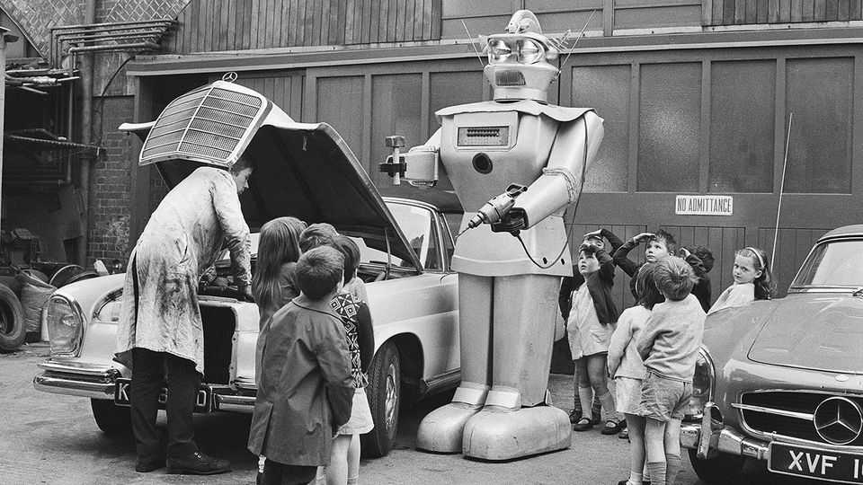

How to help your child trounce the robots
Junior workers need to act like senior executives

Oct 22nd 2026
WHAT SKILLS does your child need on the cusp of an industrial revolution? That was the question Robert Campbell unwittingly sought to answer for parents in 18th-century London. His manual, published in 1747, contained useful advice on choosing an apprenticeship and the rather harder-to-follow injunction to “improve the genius, temper and disposition of their children”. Drawing could transform a mere cabinet-maker into a master craftsman; a prospective mercer (the luxury-fashion buyers of their day) should “by no means be an awkward clumsy fellow”. There were even tips on how to avoid “the many temptations to which youth are liable in this great City”: female artisans could make a good living if they didn’t succumb to gin.
Parents today need not contend with the gin craze of the 1740s. But a bigger threat to their children’s future, many worry, is artificial intelligence, which could revolutionise the world of work much faster than the steam engine did.
No one knows exactly how it might do so, and much doom-mongering has been premature at best. Take the prediction in 2016 by Geoffrey Hinton, a British AI pioneer, that the technology would replace radiographers within five years. Instead it has raised demand for them. Other bets have failed, too. “It wasn’t that long ago that people were saying, ‘we’ve got to train everyone in prompt engineering,’” says Euan Blair, who runs Multiverse, a training firm. “That now seems pretty pointless.”
Conventional career paths are already being disrupted. “Just become an accountant” seems like worse advice with much of that job being automated and 29% fewer people being hired for entry-level roles than last year. In Britain’s service-dominated economy many other junior jobs look exposed, too. What is a young person, or a helicopter parent, to do? A modern-day Campbell could offer a few pointers.
One is that people with the right technical skills will stay in high demand. Britain has too few AI specialists, so it pays to be one of them—especially in the already-lucrative financial-services sector. Manufacturing jobs that require AI skills command a lower wage premium in Britain than elsewhere. But this is still a hefty 25%, reckons PwC, a consultancy.
Second, even if most workers will not help to develop AI, they will benefit from understanding it. Today’s government is far more hands-on than in Campbell’s time, and aims to train 10m workers to use the technology. Quality is patchy, with some courses being little more than collections of outdated slide decks. But it is a start. A survey in June, by the Office for National Statistics, found that only 41% of adults said they had used AI in the previous 12 months for work or study. (Among 16- to 29-year-olds, that rose to 63%.)
Autodidacts will be especially keenly sought after, because employers are spending less on training their workers than at any time in over a decade. Only a few enthusiastic firms offer meaningful courses in AI. One is Evri, a logistics company which has quotes by Steve Jobs, Apple’s co-founder, on its office walls. At its industrial hub on the outskirts of Barnsley, in northern England, white-collar workers huddle around laptops. This is a “hackathon” led by a Multiverse instructor fond of change-management theories. Either side of a lunch of sausage rolls and scotch eggs, the teams clean up data sets and use AI in an exercise to optimise parcel deliveries, then finish the event by delivering AI-generated presentations. Bright youngsters can do this sort of thing on their own.
They will struggle more to develop soft skills in isolation—and communication, judgment and team-building may in fact be the most important qualities to cultivate in the age of AI. Data from LinkedIn show that the most sought-after skill among sales workers on its platform is building customer relations. In contrast, AI literacy comes fifth. Moreover, Sue Duke, LinkedIn’s head of global policy, notes that workers are seven times as likely to land a job when they have a connection with someone already at a company. Schmoozing, in other words, matters almost as much as in Campbell’s day.
This is bad news for Britain’s young people. One recent analysis found that 15- to 16-year-old Britons have worse social and emotional skills, such as co-operation and resilience, than their peers abroad.
The harsh reality is that youngsters must now demonstrate such qualities much earlier in their careers than earlier generations had to. With entry-level roles disappearing, junior staff need the leadership and decision-making capacity of much older managers. They will also have to be more adaptable in order to stay ahead. “We are entering an [unprecedented] age of skills and learning,” says Hugh Milward of Microsoft, a tech giant.
In theory, Britain should be well-placed for this revolution. The English education system gives students a decent grounding in numeracy and literacy (though Northern Ireland, Scotland and Wales do less well). British universities tout their emphasis on critical thinking, which is useful for judging outputs from probabilistic large language models. Infusing vocational courses with such thinking will give young people many more options in the labour market.
The potential rewards are big. AI should bring many opportunities as well as liberation from drudgeries. “No one wants to write emails for a living anymore,” says Adam, a 19-year-old studying at Barnsley College, who has founded his own startup. Soon, they will no longer have to. ■
For more expert analysis of the biggest stories in Britain, sign up to Blighty, our weekly subscriber-only newsletter.